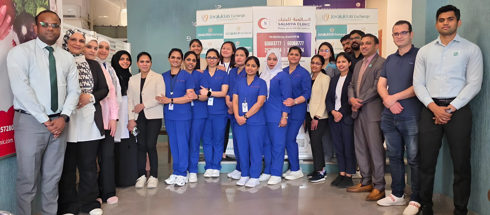

Dr. Latifa A. Al-Duwaisan
Endocrinologist · Medical director
A private polyclinic on Baghdad Street. It began in 1994 as Dr. Latifa Al-Duwaisan's hormone clinic. Today the same building has 14 departments, from women's health, children and dental to our own lab, X-ray and pharmacy.

Hormones and thyroid are where we started, and still what most people know us for. Pick a department to see what the doctor there treats. You can book any of them with one message. Full department pages
Run by Dr. Latifa Al-Duwaisan since 15 October 1994. Hormone tests are done in our own Ministry of Health licensed lab, and thyroid and ovary scans by our own radiology department in the same building.
Book with Dr. LatifaOne-to-one counselling with our nutritionist, with a meal plan built around your results and your routine. Direct line for nutrition: 6603 7930.
Book nutritionObstetrics and gynaecology for women of all ages, from teenagers with irregular cycles to menopause. Pregnancy scans are done here.
Book women's healthOur paediatrician sees babies, children and teenagers for routine check-ups and when they are unwell. Jaundice is checked with a skin meter, no blood sample.
Book for your childDr. Ahmed Salem Elsaid (internist) with Dr. Arun Kumar and Dr. Nitin Sivadas (general medicine). The first stop for most adults, and for full body check-ups.
Book a doctorENT for adults and children, with endoscopic examination and hearing tests in the clinic.
Book ENTGeneral dentistry for the whole family, including children and dental emergencies.
Book the dentistDermatology for skin conditions, and a laser and cosmetology room for hair removal, pigmentation and skin treatments.
Book skin or laserDiagnosis and treatment of urinary and male reproductive problems, for adults and children.
Book urologyAsk for any of them by name when you book. Years are time in practice.
Endocrinologist · Medical director

Nutritionist

Obstetrics & gynaecology

Paediatrician

Internal medicine

ENT specialist

Dental surgeon

General medicine

General medicine
Since 1994, each step has added more doctors and departments, so a family can see several of them in one visit. Our story
Dr. Latifa Al-Duwaisan opens her private endocrinology clinic.
The clinic moves to a bigger building and adds nutrition, women's health, dermatology and cosmetology.
Dental, lab, radiology, children, ENT, internal medicine and urology join.
Nine doctors, our own pharmacy, and doors open 8am to 9pm, Saturday to Friday.

Your blood test, scan and prescription are done in the same building as your appointment. Results go straight to your doctor.
Digital X-ray, ultrasound, bone density and mammogram.
Ministry of Health licensed lab, open 8am to 6pm.
Sat–Thu 8am–9:30pm · Fri 9am–9pm
InsuranceWe accept Al Ahleia Insurance and GlobeMed cards. Ask us about yours when you book.
Baghdad Street, Block 9, Salmiya
Opposite American Creative Academy. P.O. Box 4361, Salmiya 22044, Kuwait.
| Saturday | 8am – 9pm |
| Sunday | 8am – 9pm |
| Monday | 8am – 9pm |
| Tuesday | 8am – 9pm |
| Wednesday | 8am – 9pm |
| Thursday | 8am – 9pm |
| Friday | 8am – 9pm |
Some clinics (skin and laser, the lab) keep shorter hours. Call to check your doctor's day.